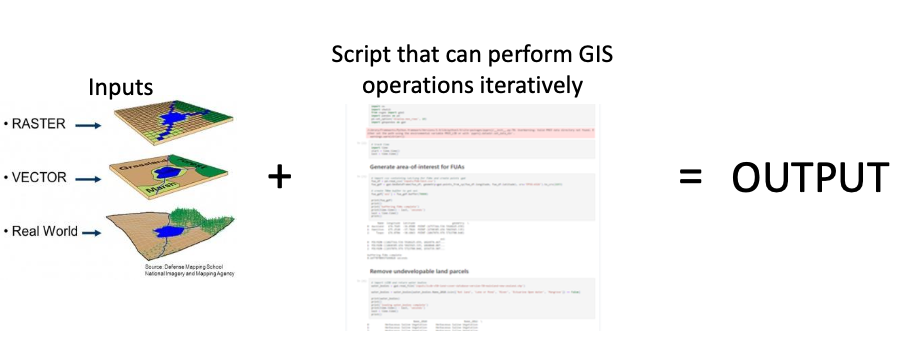
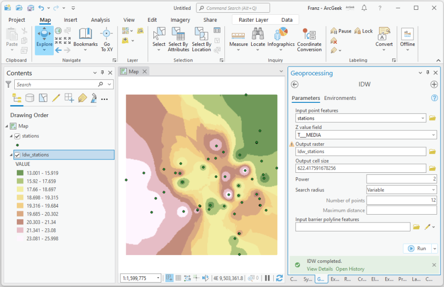
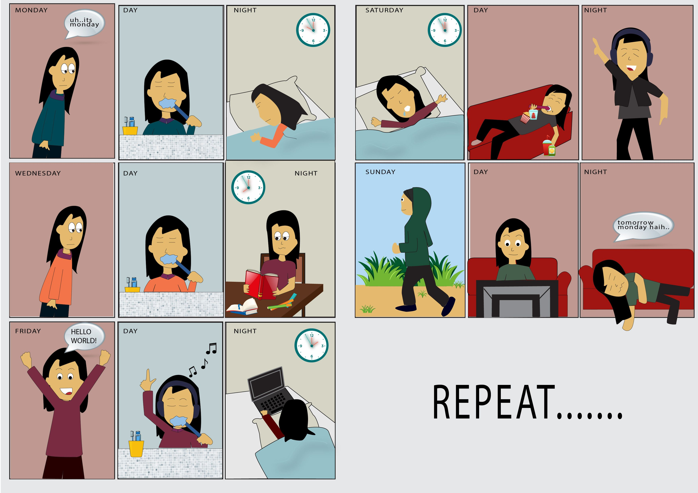

![]()

Gentle Introduction to Programming
: for GIS Dummies
April 22, 2024
What will we cover?
- Programming Basics
- Why is coding useful in GIS?
- Interactive lecture
- Variables
- Loops and conditions
- Functions
- Geopandas
What is a computer?

Figure 1: A caption
- Components:
- Devices (Monitor/keyboard)
- Motherboard (connector)
- CPU
- RAM (temporary memory)
- Storage (hard disk)
What are computers good at?
Given the definition above, it may be clear that computers are in some ways quite simple, and as a result there are certain tasks where computers excel.
Tasks computers are good at include:
- well-defined tasks
- data storage and manipulation
- repetitive calculations
- processing data or instructions
What are computers bad at?
We need to be less poetic
and become more simplistic
Logic gates
IF: IF THIS, THEN THATAND: IF THIS AND THAT TRUEOR: IF THIS OR THIS TRUENOT: IF NOT ABOVE X
Why coding is important in modern GIS?

Example: Python
Why Python?
Python is widely used
- Python being 1st in a row in programming (TIOBE Rank)
Python is open
- Open as in
- free of charge
- as in access (download and run)
- over time
- not closed
- reuse and change
- any place (platform) and for everyone
Python is approachable
- Modern interpreted languages (Python) – Code is interpreted line-by-line via a programme
- Translating high-level human readable code to machine readable code
- Scripting
- Only need snippets of code
- Can perform jobs quickly
- Ideal for GIS jobs
Python is connected
- Geographic Information Systems (GIS) software such as QGIS or ArcGIS now include a Python interpreter built in to the software
- Can customise solutions for your specific data analysis needs
Interactive show and do with Python
What we will cover:
- Variables
- Loops and basic conditionals
- Functions
- Geopandas
How will we cover it?
- Jupyter lab / Notebook
Google Colab
- “Another” Free service provided by Google
- Live code, text and graphics in one place
- Compatible with multiple languages
- Can build your own specialist ‘environments’

Let’s Take a Break!
Basic Programming Concepts
We will cover:
- Simple Python maths
- Functions
forloops- Conditional Statements
- Import files
Simple Python maths
Simple Python maths - answers
Function
Function - Errors
sin(3)
---------------------------------------------------------------------------
NameError Traceback (most recent call last)
<ipython-input-1-acdde95a6016> in <cell line: 1>()
----> 1 sin(3)
NameError: name 'sin' is not defined---------------------------------------------------------------------------
NameError Traceback (most recent call last)
<ipython-input-2-317e033d29d5> in <cell line: 1>()
----> 1 sqrt(4)
NameError: name 'sqrt' is not definedPython can’t calculate square roots or do basic trigonometry? Of course it can, but we need one more step.
Function - Solution
Well done! You have just managed to use a math library too!
Combining Functions
Functions can also be combined. The print() function returns values within the parentheses as text on the screen. Let’s print the value of the square root of four.
Variables
A variable can be used to store values calculated in expressions and used for other calculations
Data types
- A data type determines the characteristics of data in a programme
- Basic data types in Python.
| Data type name | Data type | Example |
|---|---|---|
int |
Whole integer values | 4 |
float |
Decimal values | 3.1415 |
str |
Character strings | ‘Freezing’ |
bool |
True/false values | True |
Data types
Lists and indices
Lists
Let’s first create a list of selected station_name values and print it to the screen.
Index values
To access an individual value in the list we need to use an index value.
Python returns ‘Ōrākei’ instead of ‘Britomart’. Can anybody guess why?
Index values
Modifying list values
Introducing the for loop
- Loops allow parts of code to be repeated some number of times
- Iterates over all of the items in a Python list and performing a calculation on each item.
vs
Hand-picked works: When we do loops manually
Bad example
for loop: an example
Different example
for loop: concept
Let’s break down the code above to see some essential aspect of for loops:
- The
variablecan be any name you like. - The statement of the
forloop must end with a : - The code that should be executed as part of the loop must be indented beneath the
forloop statement. The typical indentation is 4 spaces. - There is no additional special word needed to end the loop, you simply change the indentation back to normal.
In summary, for loops are useful to repeat some part of the code a finite number of times.
Your daily for loop
for day in my_life:
wake_up()
take_shower()
eat_breakfast()
brush_teeth()
ride_beam()
come_to_lecture()
...
Examples using range
Examples using two lists
Examples using two lists - Answers
Conditional statements
- We will learn how to make choices in our code using conditional statements (
if,elif,else) and Boolean values (True,False). - Conditional statements can change the code behaviour based on certain conditions.
- The idea is simple: IF a condition is met, THEN a set of actions is performed.
if else Example 1
if else Example 2
if statement without else
- The code indented under the if-statement is not executed if the condition is not True. Instead, code under the else-statement gets executed.
- How about if without else?
Conditional operator
Comparison operators
| Operator | Description |
|---|---|
| < | Less than |
| <= | Less than or equal to |
| == | Equal to |
| >= | Greater than or equal to |
| > | Greater than |
| != | Not equal to |
Boolean values
- Comparison operations yield Boolean values (
TrueorFalse). - In Python, the words True and False are reserved for these Boolean values, and can’t be used for anything else.
if, elif and else
- We can link several conditions together using the “else if” -statement
elif. - Python checks the
elifand else statements only if previous conditions were False. - You can have multiple
elifstatements to check for additional conditions.
Combinations
Combining conditions
- We can also use and and or to combine multiple conditions on boolean values
| Keyword | Example | Description |
|---|---|---|
| and | a and b | True if both a and b are True |
| or | a or b | True if either a or b is True |
weather = "rain"
wind_speed = 14
comfort_limit = 10
# If it is windy or raining, print "stay at home",
# otherwise (else) print "go out and enjoy the weather!"
if (weather == "rain") or (wind_speed >= comfort_limit):
print("Just stay at home")
else:
print("Go out and enjoy the weather! :)")Just stay at homeCombining for-loops and conditional statements
- We can also combine for-loops and conditional statements.
- Let’s iterate over a list of temperatures, and check if the temperature is hot or not
temperatures = [0, 12, 17, 28, 30]
# For each temperature, if the temperature is greater than 25, print "..is hot"
for temperature in temperatures:
if temperature > 25:
print(temperature, "is hot")
else:
print(temperature, "is not hot")